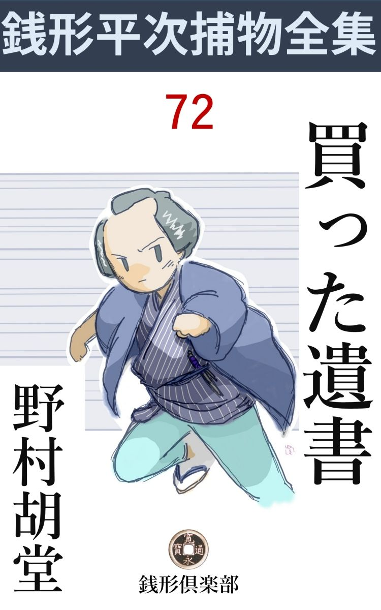
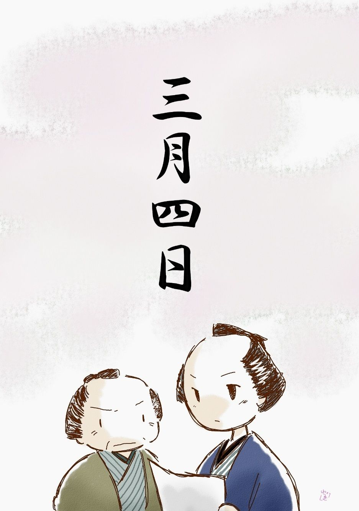

| 買った遺書: 銭形平次捕物全集第72話 (銭形倶楽部) | |
| 野村胡堂 | |
| ZENIGATA CLUB (2018) | |

一
「親分、何をして居なさるんで？」
ガラッ八の八五郎は、庭口からヌッと長 んがい顎 を出しました。
「もう蟻 が出て来たぜ八、早いものだな」
江戸開府以来と言われた名御用聞、銭形平次ともあろう者が、早春の庭に踞 んで、この勤勉な昆虫 の活動を眺めて居たのです。
生温かい陽は、平次の髷 節 から肩を流れて、盛りを過ぎた梅と福 寿 草 の鉢に淀んでおります。
「たいそう暇なんだね、親分」
「結構な御時世さ。御用聞が昼近く起出して、蟻や蚯蚓 と話をして居るんだもの」
「へッ、へッ、その暇なところで一つ逢って貰いたい人があるんだが------」
「お客はどこに居なさるんだ」
「あっしの家へ飛込んだのを、つれて来ましたよ。少しばかりの知合を辿 って、入谷から飛んで来たんだ相 で------」
「何んだって庭先なんかへ廻るんだ。お客様が一緒なら、大玄関へ通りゃ宜いのに」
「へッ、その大玄関は張物板で塞 がっていますよ------木戸から庭を覗いて下さい、親分が煙草の煙で曲芸をしている筈だから------と、奥方様が仰しゃる」
「馬鹿だなア」
平次の顔は笑って居ります。自分が馬鹿なのか、女房のお静が馬鹿なのか、それともガラッ八が馬鹿なのか、自分でも主格がはっきりしない様子です。
「それに、お客様は跣足 だ。大玄関からは上られませんよ------さア、遠慮はいらねえ、其処 から入 って来るが宜い」
ガラッ八は平次へ半分、後ろの客へ半分声をかけました。
「------」
黙って木戸を押して、庭へ入って来たのを一と目、平次の顔は急に引き締ります。
取乱しては居りますが、十八九の美しい娘が、足袋 跣足のままで、入谷から神田まで駆けつけたということは、容易のことではありません。それに、平次の早い眼は、娘の帯から裾へかけて、斑々 と血潮の付いているのを、咄嗟 の間に見て取ったのです。
「まア、ここへ坐って、気を落付けるが宜い。話はゆっくり聴こうじゃないか」
「------」
「静、水を一杯持って来てくれ」
平次は縁側へ娘を掛けさせると、女房のお静が汲んで来た水を一杯、手を持ち添えるように、娘に呑ませてやりました。
蒼白い顔や、痙攣 する唇や、洞 な眼から、平次は事件の重大さを一ぺんに見て取ったらしく、何よりこの娘の心持を鎮めて、その口から出来るだけの事を引出さなければと思い込んだのです。
「有難うございます」
冷たい水を一と息に呑むと、娘はようやく人心地付いたのでしょう。頬の堅さがほぐれて、自分の端たない様子を恥じるように前 褄 を合せたりしました。
「どんな事があったのだえ------気分が落付いたら、聴かして貰おうじゃないか」
平次の調子は、年にも柄にも似ず、老成なものでした。
「あの、大変なことになりました」
「大変？」
「父が死にました」
こう言った娘は、張り詰めた気が緩 んだものか、いきなりシクシク泣き出しました。
「ただ死んだのではあるまい。------自殺したとか、殺されたとか」
娘の着物に目立たぬほどに付いた血を、平次は見て居るのです。
「遺書 もありますし、誰も人のいない部屋で死んでいたんですから、自殺に違いない------とお絹さんも近所の衆も言いますが、私にはどうも腑に落ちないことばかりで------」
娘は思いの外確り者らしく、次第に納まる興奮と激動の下から、知的なものが閃 めきます。
「で、お前さんは？」
平次はまだ、この娘の名も聴かずに居たのでした。
「あッ、ついあの」若い処女 らしく始めて真っ赤になった娘は、「あの、研 屋 五兵衛の娘糸と申します」------そう言って縁側に手を突きました。
「御徒士 町 の------成程そうか。親御の五兵衛さんが何うしたんだ。最初から順序を立てて、詳しく聴かして貰おう」
平次は縁側へ腰を掛けたまま、煙草盆を引寄せました。
二
御徒士町の研屋五兵衛は、一介 の町研屋から身を起して、後には武具刀剣万端の拵えを扱かい、七間 間口二軒建の店を張って、下町切っての良い顔になって居りました。
その大名高家への連絡を取ったのは、根津の大町人、公儀御用達を勤むる石川良右衛門で、諸大名は言うに及ばず、公儀御腰物方の御用までも取次ぎ、長い間ともどもに結構な利分を見て居たのでした。
その研屋五兵衛が、ゆうべ酉 刻 半 過ぎ入谷の寮で、直刃 の短刀で左首筋を貫 き、紅に染んで死んでいたのです。
「まだ宵のうちで、あんなに暖かい晩ですから、父は自分の部屋の格子窓を開けたまま、火鉢の側で何か考事 をして居た様子でした。お絹さんは風呂へ入って居りましたし、私はお勝手で下女を相手にお仕舞をして居りました。あんまり奥が静かなので、妙に気になって行って見ると------」
お糸はゴクリと固唾 を呑みます。
「父親が死んで居たのだね------そのお絹さんと言うのは何だえ？」
「あの、父の------」
「そうか」
要領を得たような得ないような問答ですが、これだけで、お絹というのは、五兵衛の妾 ということがわかります。
「お前さんは、どうして入谷の寮なんかへ行って居たんだ。お絹さんとかが居ちゃ、あんまり面白いところでもあるまいが------」
「私は去年の冬から身体を悪くして、店の方は人の出入も多いし、落付いて養生も出来ないから------と、ずっと入谷の寮に泊って居ります。それに、お絹さんは、思ったよりは親切にしてくれますし、そんなにいやなところとも思いませんでした」
「成程、------ところで、それだけの事なら、何も俺のところへ飛んで来る筈はあるまい。何が一体腑に落ちなかったんだ」
平次は静かに水を向けました。賢こいようでも若い娘は、事件の重大さに圧 倒 されて、ともすれば口が重くなりそうなのです。
「側には遺書がありました、が」
「どんな風に？ 畳んだままか、それとも拡 げて何か載せて------」
「畳んだままでした」
「文句は？」
「それが大変でございました。何んでも、根津の石川良右衛門様が、公儀御腰物方から、御手入を申付けられた、上様の佩刀 、彦四郎貞宗とやら------東照宮様伝 来 の名刀だということでございました------その研 から拵えの直しを、父がお引受けしてお預り申上げているうちに、何時の間にやら盗まれてしまったのだ相です」
「フーム」
平次も引入れられるように唸りました。将軍家の腰の物を預って盗まれたのでは、成程その頃の社会で、人間の命が一つ二つ飛ぶのに何んの不思議もありません。
「------思案に余った父は、似寄りの刀を摺 り上げ、銘 まで刻んで、素人眼には判らないような偽物を作り、ともかくも、石川様の御手から、お係り役人まで差上げた相ですが、二三日前、城中御道具調べの時、本 阿 弥 の鑑定 で偽物と解り、石川様へ厳重なお達しがあったのだ相 でございます」
「成程」
それでは自殺するのも無理はない------と平次ならずとも思ったでしょう。
「今朝は検死 が済んで、何もかも父が悪いことになり、遺書は三輪の万七親分から、町方御役人の御手に差上げることになり、葬 いの済むのを待って、改めて御沙汰がある相でございます」
「------」
多分、研屋は欠所、家族は所払いにもなるでしょう。
「でも私は、どうしても、父が自害したとは思われません」
「------」
「晩酌 を一本つけさせ、宜い機嫌で御飯を済ました人が、格子があるにしても、窓を開けたままで、自害する人があるでしょうか」
「フーム」
この娘の恐ろしい慧眼 に、平次とガラッ八は顔を見合せました。
「あんまり変だから、今朝お絹さんが役人方と話しているうち、裏口から抜出して飛んで参りました。------本当に父親の落度で、死ななければならない破目でしたら、諦めようもありますが、万一人手に掛って殺されたのなら、このまま有 耶 無 耶 にして、私や弟達が乞食になっては、死んだ父親も浮び切れません。お願いでございます。親分さん、入谷まで行って、様子を見てやって下さい」
お糸はもういちど新しい激情にひたって、平次の膝へも取 縋 りそうにするのでした。
「そう言えば、可怪しいことばかりだ。とにかく、覗いて見るとしようか------尤も俺が行って、反って困るようなことを嗅ぎ出すかも知れないが、それは承知だろうな」
平次は煙草入を腰に差しながら、お静の持って来た羽織に手を通しました。
「それはもう、親分さん、父親に罪があるのなら、乞食になっても、決して人様は怨みません」
「では、一つだけ訊くが、------お前さんの父親を殺しそうな人間は誰だろう？」
「？」
「そう訊いては返答に困るだろう。それじゃ、父親と一番仲のよかった人間は誰だい」
「石川様でございました」
お糸は言下に答えました。
「それから？」
「お絹さん」
「父親の信用していたのは」
「私と、手代の駒吉でございました」
「------」
平次は黙って外へ出ました。続くガラッ八とお糸、------その足には、お静の貸してくれた駒 下 駄 を突っかけていたことは言う迄もありません。
三
入谷へ行き着いたのは午 過 ぎ、役人は帰ってしまって、三輪の万七とその子分のお神楽 の清吉が、弔 い客を睨め廻すように入口の一と間に陣取っておりました。
「お、銭形の、また手柄をさらいに来たんじゃあるまいね」
三輪の万七は近頃腐 りきって、ヒステリックになって居る様子です。
「そんなわけじゃ無い。少し聞き込んだことがあるから、万七親分に話して置こうと思って来たのさ」
平次は穏やかな調子で、下手 に出ました。手柄や功名は誰にさしても、それはたいした問題ではありません。事件の真相を突止めて、悪い者に思い知らせてやるのが、平次の十手捕縄にかけた、唯 一の望みだったのです。
「聞き込んだことは？」
「五兵衛は左利きでも何んでもないのに、左首筋に短刀を突っ立てたのは変じゃないかね、三輪の」
「そんな事を言ったって、右手の短刀を、自分の左の首筋へ突っ立てられないこともあるまい」
「手が逆 になるぜ」
「------」
「それに、窓を開けっ放したままで、死んで居たって言うじゃないか。景色を見ながら首を縊 る奴はあるかも知れないが、暗闇を眺めながら喉を突く人間は無いよ」
「そう言えばその通りだが------」
三輪の万七は考え込みましたが、平次のように、素晴らしい知恵が、後から後から浮んで来る筈もありません。
「遺書は------？ 万七親分」
平次は話題を変えます。
「八丁堀へ持って行く筈だが、もう少し考えて見る積りで、ここに持っているよ」
万七はそう言いながら、懐から八つ折の半紙を二枚ほど出しました。
「成程、これが遺書なんだねエ」
「本人の筆蹟 に間違いは無いよ」
畳の上に拡げた遺書の上へ、四人の眼が四方から注ぎました。プーンと良い匂いがします。しばらくすると平次は、
「こりゃ変だぜ」
うさんな首を傾けます。
「何が変なんだ」
と万七。
「八つ折に畳んで、長い間持って歩いたんだろう。折目がひどく痛んで、変な匂いまで付いているが、------可 怪 しいのは日付だよ」
「三月四日というと、昨日だ」
「遺書は二た月も三月も前に書いたのかも知れないが、日付を入れたのは、多分昨日だろう。------それは宜いが、遺書と日付との筆蹟が違っているのは何ういうわけだ」
「そんな事がどうして解るんだ。本文も日付も、恐ろしく達者な字じゃないか。墨色だって、少しも違やしない」
万七は自分の見込の引っくり返されるのは、毎々のことながら我慢のならない屈辱だったのです。
「三月四日の月という字を見るが宜い、本文のは克明 に二本の横棒を引っ張っているが、日付の方はチョンチョンと点を二つ続けて打って居るぜ」

「草 と行 だ、それ位の違いはあるだろうよ」
「いや、こんな癖は、草と行の違い位じゃ変らないのが本当だ。万七親分、この自害は少し臭いぜ」
平次はそっと囁き加減に言うのです。この手柄は万七に譲ってやっても、事実だけは探究して置きたかったのでしょう。
「そんな事を言うなら、五兵衛の死んでいた部屋を見るが宜い。雨戸を閉めたら最後、廊下から入るより外には、入口のないところだ」
万七は先に立って平次を案内します。寮と言っても、研屋五兵衛が贅 を尽した建築で、入口の右は居間と女中部屋とお勝手と風呂場、左はお糸の部屋で、その先二た間置いて、一番奥が五兵衛の殺された部屋になって居ります。
「成程、窓は頑丈な格子だ。縁側よりほかに曲者 の入るところはない」
平次は無関心に立ったまま、こんな事を言います。
「縁側は薄明るいうちに下女とお糸が締めた筈だ」
「締める前から入って隠れている術 もあるが------」
と平次。
「それは無理だ。女三人の眼を免れて入っても、縁側も入口も締めてしまったから、逃出す工夫は無い」
「------」
これは銭形平次の負けでした。窓の格子は厳重で、人間が潜 れる筈もなく、女世帯に馴れて、雨戸は日の暮れると一緒に締めるのですから、縁側や入口から、曲者が入れる道理もありません。
すると------、平次はそこまで考えて大きく首を振りました。
四
五兵衛の死骸は、綺麗に洗い清めて、別間でお経 を上げておりました。集まったのは、五兵衛の伜 友三郎、五兵衛の弟の五郎助、番頭の宗七、手代の駒吉、それに親類が二三人、根津の御用達の石川良右衛門------ざっとそんなものでした。
五郎助は前額の禿 げた、四十前後の狡 るそうな男ですが、兄を殺すほどの悪人とも見えず、お糸の弟の友三郎は、十七八の前髪で、番頭は五十がらみの実体な男、手代の駒吉は少しにやけた、世間並の良い男です。
石川良右衛門は苗字 帯刀 を許された大町人で、五十前後の立派な仁体、これは武家の出だということで、進退動作なんとなく節度に叶 って居ります。
外には死んだ五兵衛の妾お絹と下女のお百 だけ。お絹は商売人上がりの三十女で、愛嬌がボタボタこぼれ相な豊艶な女。それが大芝居で悲嘆場を見せるのは、身内の人達の大きな悩みでした。
「銭形の親分さん、有難う存じます。親分がお出で下すったんで、どんなに心丈夫だか判りません。------お店の皆さん方は仏様を今にも御徒士町へ運んで行くと仰しゃるんですけれども、それじゃ私が可哀想じゃございませんか。ここで亡くなったのも、何んかの約束事で、ね親分さん、そんなもんじゃございませんか。どうぞあの、ここから葬式 を出すように、親分さんから仰しゃって下さいませ、ね、親分さん」
そう言ううちにも、不謹慎な手が、平次の肩へ触ったり、手を取ったり、膝へ載ったりするといった質 の女です。
「宜いとも。------五兵衛の死骸は、下 手 人 が解るまでここから運び出しちゃならねえ、解ったかい、皆の衆」
平次の言葉は唐突で効果的でした。
「下手人？」
誰よりも驚いたのは、番頭の宗七と、弟の五郎助です。
「五兵衛は自害 したのじゃねえ、人手に掛って死んだのだぜ」
「親分、そりゃ本当ですか」
お絹は顔色を変えて詰め寄りました。
「気の毒だが、本当だよ。それも曲者は外から入ったんじゃ無い」
「すると、あの、下手人は家の中に居たと言うんで------？」
「------」
平次は黙って一座を見渡します。
「私じゃありませんよ、親分さん。私はあの時ちょうど湯に入って居たんですもの、そんな隙なんかありゃしません」
お絹は、自分の顔に平次の視線を感ずると、口火を点けられた鼠花火 のように騒ぎ出しました。
「お前でなきゃ誰だえ」
後ろからこう言ったのは、三輪の万七です。平次の意志に引摺られて、いつの間にやら、五兵衛自殺説を翻 したのでしょう。
「私は知るもんですか。旦那を怨んでいる者は、その辺に二人や三人は居ますよ」
「誰と誰だ」
「親が承知しないばかりに、好きな男と婚礼の出来ない人もあり、少しばかりの費い込みがばれて、犬畜生のように言われた人もありますよ」
一座は白け渡って、お絹の気狂い染みた様子を見詰めるばかりです。
「それじゃ一つだけ訊いて置こう。あの短刀は誰の持物なんだ」
平次は口を挾 みました。これだけ恥や義理を捨てた女なら、それ位のことは言うかもわからないと思ったのです。
「石川さんのですよ」
「何？」
愕然としたのは平次ばかりではありません。名指された石川良右衛門は、何んか弁解をする積りらしく口を開きましたが、その言葉が出る前に、
「尤も、拵 の直しを頼まれたと言って、この間から旦那が持って居ましたが」
お絹は言いきります。石川良右衛門のものであったにしても、五兵衛が預っていた品では問題がなくなります。
平次は改めて死骸を見せて貰いました。傷は左の首筋で、右へ突き貫けるほどの力で短刀を突き立てた上、少し刃物を捻 ったらしく、傷口が痛々しく歪んでおりますが、並大抵の人間の力で自分の首へこれだけ刃物を突き立てられないことは、あまりにも明 かです。
「死骸の手に血が付いて居たろうか」
平次は、三輪の万七を顧みました。
「ひどい血だったよ」
「短刀の柄 は？」
「鮫 が真っ赤さ。尤も短刀の柄を握っていたわけでは無かったが」
「有難う、今度は外を見るとしようか」
平次はガラッ八だけをつれて、外へ出ました。
五
「親分、見当は？」
ガラッ八は外へ出ると、堪り兼ねて平次の耳にささやきます。
「黙って居ろ、------人に聴かれちゃ悪い」
家をグルリと一と囲 り、田圃の中に建っているので、隣との連絡もなく、なんの手掛りがあろうとも思われません。
「親分、これは足跡じゃありませんか？」
八五郎は流 を越えて、格子の前へ来る荒れ果てた道を指しました。
「成程、足跡には相違あるまいが、恐ろしく沢山あるじゃないか。三人分か四人分の足跡だぜ」
そう言いながらも平次は、窓から離れて、小さい流の方へ進みます。幅は一間ばかり、さして深くはありませんが、飛越すとなると一寸 不気味です。
「向うへ渡って見ましょうか」
「行って見たいが、橋はないな」
「棒がありゃ越せますよ」
「向うにあるじゃないか」
平次は流の向うを指しました。泥の中に突っ立った握り太の竹 竿 が一本。
「持って来ましょうか」
ガラッ八は身を躍らせました。危ういところで向う岸へ這い上がって、しばらくは道化 た顔をして見せます。
「その竹竿を投ってくれ」
「ハイよ」
ポンと投った竹竿、平次はその尖を握っていやな顔をしました。上へも下へもべッとり泥が付いているのです。
「もう沢山だ。八、帰ろうぜ」
「何か見付かりましたか、親分？」
「たいしたことじゃない。これを見るが宜い」
もういちど流を飛越して来た八五郎の顔の前へ、平次は、竹竿の泥の中に突っ立っていた方を見せました。
泥で一と通り隠されて居りますが、穴の中を覗くと、べッとり血潮。
「ホウ」
ガラッ八は蛸 のような唇 をしました。
もういちど家へ帰ると、番頭の宗七を物蔭に呼出して、平次は静かに切出します。
「番頭さん、本当の事を話してくれ。でないと、飛んでもない者に縄を掛けなきゃならない」
「へエ、へエ、どんな事でも申上げます」
宗七の臆病らしい顔には、何の作為 があろうとも思えません。
「娘のお糸を嫁に欲しいと言ったのは誰だい」
「駒吉でございますよ、親分さん」
手代の駒吉とお糸の仲は、平次も気が付かないわけではありません。
「主人が生木を割いたというわけだな」
「へエ------」
「昨夜駒吉は店を空けたんじゃあるまいな」
「昨夜は風呂が立たなかったので、町風呂へ行ったようでございました。小半刻経って、戌刻 過 ぎになってから、宜い心持に茹 って帰って来ましたが」
「茹 って？」
「へエ------、赤い顔をして居りました」
「それからもう一つ、店の金を費い込んで主人に叱られたというのは誰だい」
平次は話題を変えます。
「申上げなきゃなりませんか、親分さん」
「当り前だ」
「主人の弟の、五郎助さんで」
平次とガラッ八は顔を見合せました。また一人大きな疑 を背負いそうな人間が現われたのです。
「その五郎助は昨夜酉刻 から戌刻 までの間どこに居たんだ」
「本所の御屋敷から呼出されて、昼過から参り、戌刻 過にようやく帰って来ましたが」
「あとは昨夜店をあけた者はあるまいな」
「へエ------」
「ところで、これはよく気をつけて正直に返事をして貰いたいが、研 屋 の暮し向は近頃どんな具合になっているんだ。昔のような事はないという評判も聴くが」
「へエ------」
宗七は返事に困った様子です。
「どうだ、宗七」、
「申上げます------いずれは知れることでございましょう。------旦那の遊びがひどくなって、この三年ばかりの間に大変な穴をあけてしまいました」
「フーム」
「去年の暮にはどうしても、三千両から五千両ないと越せませんでした」
「で？」
「幸い石川様が融通 して下すって研屋の身上を建て直したようなわけでございます」
「どれほどの融通だ」
「三千五百両ほどでございます」
「少し大きいな」
いかに公儀御用達でも、三千五百両は大金です。それも心易いというだけで研屋に貸すのは、何か事情がありそうにも思えるのでした。
「ところで、あの石川さんの頼んだ短刀はいつ出来上がったんだ」
「一昨日 でございます」
「それからもう一つ訊くが、------遺書のことは屡々 聴いたことだろうな」
「へエ------」
「上様御佩刀 の彦四郎貞宗を盗まれたというのは、何時のことだ」
平次の問はようやく核 心に触れて行きます。
「そんな事は一向に存じません」
「何？」
「遣書のことを聴いて、びっくりして居るだけでございます。尤も旦那がお申付けで、彦四郎貞宗の偽物は作りましたが------」
「それはいつのことだ」
「去年の暮でございます。長目の刀を摺り上げて、偽 の銘 まで切らせました」
「拵えは？」
「鞘 も柄も目貫 も鍔 も、旦那が何処かからお持ちでございました」
「フーム」
平次は唸りました。
番頭の言うことが本当なら、偽の貞宗は研屋の手で作らせたが、盗まれたという刀の鍔や柄や鞘は五兵衛が何処からか持って来たのです。
それが新しく拵えたものでないことは、玄人 の番頭がよく見て居たことでも証明されるでしょう。
事件の奥底は、これで際限もなく深くなって行きました。銭形平次もさすがに、腕を拱 いて唸る外はありません。
六
「ちょいと、明るいところへ顔を出して貰おうか」
平次は手代の駒吉を、縁側の陽の中へつれ出しました。
「へエ------」
「白状してお慈悲を願った方が宜いよ」
「親分」
駒吉は舌が引釣って、しばらくは言葉も出ません。はげしい恐怖が五体を走って、ワナワナと顫 えるのです。
「町内の風呂屋へ行って訊くまでもあるめえ、顔へ紅なんか塗りやがって------御徒士町から此処まで、駆けて来て主人を殺したろう」
平次は駒吉の肩先を掴んで、なおも陽の方へその顔をさし向けるのでした。
「親分、違います。私が殺したんじゃありません」
「それじゃ誰だ」
「御徒士町からここへ駆けつけて、格子の外から覗くと、旦那はもう短刀を首筋に突っ立てて死んで居りました」
「嘘じゃあるまいな」
「私はお嬢さんに逢いに来たんですが、あんまりびっくりして、そのまま飛んで帰りました。嘘も掛引もない話です」
「誰にも逢わなかったか」
「誰にも逢いません」
疑は全く解消したわけではありませんが、顔へ紅を薄く塗って、町風呂へ行くと見せて女に逢いに来るような男が、格子を隔 てて、三尺も奥に居る、主人を刺し殺せる道理はありません。
その次に呼出されたのは、主人の弟の五郎助でした。
「兄の五兵衛には、手ひどくお叱言を言われた相だな」
平次は調子を変えて、この喰えないような中年男に相対します。
「滅茶滅茶にやられましたよ。費い込んだのはほんの五六十両で、それをあんなに泥捧扱いにされちゃかないません」
「それで怨 を言いに、昨夜此処へ来たのか」
「えッ」
「隠すな。本所のお屋敷を出た時刻を訊くまでもなく、俺にはよく解っている」
平次の言葉は自信に充ちております。
「------」
「お前が兄を殺したとは思っちゃ居ない。------唯、ここで見た事を言いさえすれば宜いのだ」
「恐れ入りました、親分さん。------正直のところ私は、兄貴を打ち殺す積りでここへ来ました。酉 刻 半少し過ぎだったと思います。表は締って居るので、裏へ廻って来ると、兄貴の部屋にはカンカンに灯が点いて、格子の外には、黒い人影が見えました」
「------」
「私の足音を聞くと、人影はあわてて格子を離れ、あっと言う間にあの流を飛び越して逃げてしまいました。------呆気 に取られて格子の外から覗くと、兄貴は首筋を短刀で刺されて、もう息が絶えた様子------」
「それを見ぬ振りで帰ったのか」
「天罰ですよ、親分さん。私の兄には相違ありませんが、あんな悪い人間はあるものじゃございません。まごまごして兄殺しにされちゃ合いませんから、私は一目散に逃げました」
こんな薄情な弟が、兄を悪人呼ばわりするのですから、二人の日頃の仲も思いやられます。
「で、逃げた曲者が、何か持っていた筈だ。それに気が付いたか」
「そう言えば二間位の竹竿 を持って居ましたよ。流を飛越す時も、それを使った様子で------」
「それで宜い」
平次は五郎助を向うへ追いやると、もう一度考え込みました。
「親分、これは一体どうした事でしょう。この家を覗いた奴は二人も三人もあるのに、殺した奴は一人も無いなんて、------矢張りあのベタベタした妾が怪しいんじゃありませんか。風呂へ入る前にちょいとやって、風呂場で返り血を洗えば、後へ何にも残りゃしませんよ」
ガラッ八には、ガラッ八だけの考えがありました。
「女の力で、あれほど短刀は打ち込めないよ」
「------」
ガラッ八はポリポリとぼんの窪 を掻きます。
「親分さん、駒吉は何んにも知りゃしません。縛らないでしょうね」
そっと後から近づいたのはお糸でした。自殺で済ませば済んだのを、うっかり銭形平次を誘い出して、恋人まで疑の俎上 に上せるようになったのは、若い勝気な娘の我慢のならぬことだったのです。
七
その晩、平次は八丁堀の与力、笹野新三郎の役宅を訪ねました。
「平次、厄介なことが起ったな。研 屋 五兵衛の遺 書 が表沙汰になると、御腰物方が三人、腹切り道具になるが------」
笹野新三郎が暗い顔をするのも無理のないことでした。将軍の佩刀 、------東照宮伝来という由緒のある品が、偽物と掏 り替った上、そのために世上の口に上る騒ぎまで起しては、係の役人の面目が立たないことになるのです。
「そのことでございます。まだ判然 いたしたわけではございませんが、ことによれば、真 物 の彦四郎貞宗が戻るかもわかりません」
平次は静かながら、自信に充ちた調子でした。
「それは本当か、平次」
笹野新三郎も思わず膝を乗出します。
「つきましては、あの御佩刀を、もう一度拝借いたしとう御座います。拵えに不行届なところがあるとか何とか、名目はいくらもあると存じます。もう一度石川良右衛門に御貸下げ下されば三日のうちに、中味を真物の貞宗と入れ換えて、お返し申上げられると思いますが」
「そんな事なら、なんとかなるだろう。早速取はからってみるとしよう」
「それで、万事無事に納 まりましょう。それでは、くれぐれもお願申上げます」
平次は妙なことを頼み込んで引下がりました。
笹野新三郎から町奉行に申入れ、町奉行から、御腰物方に伝えて、翌る日の午 後 にはもう、『拵え不行届』という名目で彦四郎貞宗を、もう一度、根津の御用達石川良右衛門の手に戻されたのです。
銭形平次は、その晩、根津の豪華な屋敷に石川良右衛門を訪ねました。
「何？ 銭形の親分が来た、------丁寧 に奥へ通すのだよ」
石川良右衛門は、訪問者の名を聴くと、座を移して、奥の客室に迎えます。
「旦那、とんだお邪魔をいたします」
相手は町人ながら苗字帯刀を許された身分、平次は謙 遜 って挨拶しました。
「用事と言うのは？ 銭形の」
石川良右衛門はさすがに落着きを失っております。
「外でもございません、------研屋五兵衛の遺書に伽羅 の匂いの浸み込んで居たことを御存じでしょうか」
「------」
「最初は結構な煙草かと思いました、------恥かしながら、伽羅や沈 香 というものを、嗅いだこともない私で、あれが伽羅と判るまでに、飛んだ苦労をしましたよ」
平次は淋しく笑います。
「で？」
石川良右衛門は冷静を取戻しました。
「五兵衛を刺した短刀は、あの前の日、五兵衛から旦那に返したことが解りました」
「何？」
「証人は五兵衛の娘のお糸、------変な羽目で、入谷の寮で、父親の五兵衛が旦那に手渡すところを見たのだそうです」
平次の論告は次第に急になります。
「それがどうしたというのだ、------つまらない言い掛りをすると、御上の御用を聞く者でも、許しては置かぬぞ」
石川良右衛門は威猛高 になりました。五十年輩の押の強さ、銭形平次は危うく踏止まって陣を立て直します。
「旦那、まだありますよ、------身上を潰してしまった研屋五兵衛に、三千五百両という大金を融 通 したのは、ありゃ、何のためでした」
「ぶ、無礼なことを言うな、金の貸借は町人の常だ、------」
岡っ引の差図は受けぬわい------と言う積りでしょうが、さすがにそれは口の中で噛み潰しました。
「旦那、どうぞ、本当の事を仰しゃって下さい。後のことはこの平次が引受けます」
平次はひるむ色なく詰め寄るのです。
「------」
「御腰物方から、貞宗はもう一度戻った筈です。旦那の出よう一つでは、私はその中味を真 物 と入れ換えて、何もかも元の通りにして上げられると思います」
「------」
「旦那が言い憎いなら、私から順序を立てて言って見ましょうか」
「------」
平次の自信に圧倒されて、石川良右衛門もさすがに口を緘 みました。
「多分非曲は研屋五兵衛の方にあるのでしょう、旦那はどうしても、あの男を生かしては置けなかった------」
「------」
「前の日五兵衛から受取った短刀を持って行くと、ちょうど入谷の寮の四方 には人もなく、五兵衛は格子の中で、何か考え事をして居ました」
「------」
「格子の中の五兵衛を殺す工夫は、たった一つしか無い。幸い窓の外にあった、二間ばかりの竹竿を拾って、その先へ、五兵衛から受取ったばかりの直 刃 の短刀を差しました。------竹の先は少し割れている、短刀を差込んでみると節のところでピタリと止って、手ごろな槍のようになった」
「------」
「武家出の石川良右衛門は、槍 は名誉の腕前でした。窓の外へ忍び寄ると、何にも気のつかずに居る五兵衛の左首筋へ、格子の外から存分に突っ立てた。竹を捻って引くと、幸か不幸か、短刀は五兵衛の首筋に残って、竹竿だけ手元に戻ったのです。------そのうちに、人が来た様子、竹竿を持ったまま驚いて逃出し、その竹竿を使って流れを飛越した上、血の付いた方を泥に突き差して、そのまま逃げてしまった」
「------」
「旦那、これで間違いは無いんでしょうか」
平次は静かに語り終るのでした。その場の情景を見たような話し振りです。
「そのとおりだよ、平次」
静かに応ずる良右衛門。
「へエ------」
「よくも捜 った。------さすがは銭形の親分、恐れ入ったよ。------私はもう覚悟を決めて居る。逃げも隠れもするわけではない」
石川良右衛門はそう言いながら、一刀を取上げました。
「待って下さい、旦那、研屋五兵衛を殺さなければならなかったわけ、それを承 りましょう」
平次は良右衛門の覚悟の手を止めます。
八
石川良右衛門は、研屋五兵衛の懇望 のまま諸大名はいうまでもなく、公儀の御用までも取次ぎ、この十年の間に、めっきり研屋の暖 簾 をよくしてやりましたが、五兵衛は女道楽と勝負事が好きで、最近二三年の間に、さしもの身上をすっかりいけなくして了 ったのでした。
御腰物方から、東照宮伝来の佩刀 を頼まれたのは去年の夏、五兵衛に拵えを直させて、石川良右衛門の家へ持って来ると、ある夜泥棒が入って、それを奪られてしまいました。
良右衛門の驚きは言う迄もありません。さっそく五兵衛に相談すると、偽物を作ってともかくも一時は凌 ぎ、そのうちにゆるゆる真物の行方を捜し、金に飽かして買い戻すより外に途はあるまいと言うことになり、五兵衛はさっそく偽物を拵え上げ、鞘 から鍔 まで、寸分違わぬ物を持って来て、石川良右衛門の手で、それを御腰物方に納めたのは去年の秋です。
それが、本阿弥 の鑑定 で、偽と知れたのはツイ近頃、------その前に万一の時の事を五兵衛に相談すると、佩刀を盗まれた落度から偽物と掏り換えの罪は、みんな五兵衛が自分で引受けるから、五千両という大金を貸せという難題です。五兵衛はその金で傾く身上を持ち直し、伜友三郎、娘お糸の行末を安 泰 にした上、露見した時を最期に、自害して果てるという大変な条件を持出したのです。
五千両を三千五百両に負けさせ、その代り、五兵衛は貞宗紛失から偽物作りの罪を一身に引受けた、日附のない遺書を作って、金と引換えに石川良右衛門に渡したのは去年の暮のことでした。
「それからしばらく無事な日がつづいた。が、年に一度の御道具調べがあって、とうとう偽物の露見する日が来てしまった。御腰物方からは厳重な談判だ。日ごろの勤め振りに免じて、今すぐ真物を返すなら、これほどの罪だが許してやるとまで仰しゃる。御腰物方御役人にしても、これが表沙汰になっては腹切り道具だ」
「------」
石川良右衛門は、奇怪至極なことを語り進みます。
「一方、研屋五兵衛は、腹を切るどころの沙汰か、せせら笑って私の言うことなど相手にしない。強 いて談じ込めば、事荒立てて、罪をこの良右衛門一人に被 せようと言うのだ。あまりの事に、たまり兼ねて、最後の覚悟を定め、予 て用意した五兵衛の遺書に日付まで入れて行った晩の事は------平次、お前が見通した通り、寸分の違いもない」
「------」
「この上は何とでもしてくれ、善悪はともかく、人一人殺した私だ、素 より生きて居ようとは思わぬ------」
さすがは武士の出でした。石川良右衛門、一身投出して、もはや悪びれた色もありません。
「よく解りました、旦那、そう仰しゃって下されば、私にも致しようがあります。その貞宗の佩刀を持って、ともかくも、私と一緒に入谷まで、お出で下さいませんか」
「何処まででも行こうよ」
二人は根津から入谷へ、------薄寒い早春の夜風を衝いて急ぎます。
× ×
「八、変りは無いか」
平次は寮の入口から声を掛けました。
「二日見張ったよ、親分。一人も出さず、一人も入れずさ、------それから、箸 より重いものは、誰にも持たせねえ」
八五郎はヘトヘトに疲れながらも元気よく応えます。
「それは宜い塩梅だ」
平次は石川良右衛門と一緒に中へ通ると、八五郎、三輪の万七、お神楽の清吉を手伝わせて、徹底的に家の中を探させました、天井から床下から、押入も、戸棚も、土 竈 の中も、羽目板の後も、絶対に見落さない筈ですが、夜中までかかって、小刀一挺、いや、針一本見付からなかったのです。
それから、畳を割 き柱を叩 き、戸障子の棧 から、敷居まで剥ぎ廻りました。
「駄目だ、親分」
まず八五郎が悲鳴をあげます。一と晩の労働にヘトヘトになって、朝の光の射し込む頃は、皆んなの顔は絶望と疲労に土色になって居たのです。
「旦那、あの晩短刀を差し込んだ竹竿 は何処にありました」
平次は突飛なことを訊きます。
「軒下に立てかけてあったよ」
良右衛門は無関心に応えました。
「物干竿には短いし、心張棒には長いし、矢張りあれかな」
平次は外へ飛出すと、問題の竹竿を持って来ました。
「八、鉈 を持って来てくれ」
「へエ------」
朝の光の中------縁側でサッと割ると、
「アッ、刀」
竹竿の中から出たのは、拵えを取り払った、彦四郎貞宗の一刀に紛 れもありません。
平次はそれを偽貞宗の代りに元の鞘に納め、呆然として我を忘れた石川良右衛門に返しました。
「旦那、これを直ぐ御腰物方に届けて下さい、この上魔がさしちゃいけません」
「有難い、平次親分、この御礼は------」
石川良右衛門は畳の上に手を突いて居りました。
「三千五百両で沢山ですよ、------さア、早く、------二度と入谷へ足を向けちゃいけません」
石川良右衛門は、夢心地で立去りました。
それに続いて、何が何やら解らぬままに引揚げる三輸の万七とお神楽の清吉。後に残った平次とガラッ八は、これも驚き呆れるお糸に暇を告げて、こう附け加えるのでした。
「お糸さん、父親のことは諦 めるが宜いぜ。御徒士町の店は立派に立ち行くだろうから、お前は駒吉と一緒になって、弟を見てやるさ」
「------」
お糸は美しい眼を挙げました。父の敵はとうとう判らず、平次にお礼を言って宜いか悪いか、その見当さえ付かなかったのです。
「八、娘や伜に罪はないよ。------石川の旦那も、あの大身代から、三千五百両出して、自分の首を繋 いだと思ったら腹も立つまい」
帰り途、平次は面白そうにこう言うのでした。
「何が何やら、少しも解らねえ」
ガラッ八の鼻は蠢 めきますが、事件の本当の匂いは、どうも嗅ぎ出せそうもありません。
（編注）
作品中には、身体の障害や人権にかかわる、差別的な語句や表現が見られますが、本書が成立した当時の時代背景等が現代とは異なる古典的な文学作品でもあり、著者が故人でもありますので、底本のままとしました。ご理解、ご諒承のほどをお願い申し上げます。
著者---野村胡堂
挿絵---萩 柚月 © 2017
初出---「オール讀物」昭和十三年二月号 文藝春秋社
底本---「錢形平次捕物全集」第四巻 河出書房 昭和三十一年六月三十日初版
編集・発行 銭形倶楽部